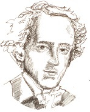

Sanatta son derece yetenekli bir anne ile varlıklı Yahudi bir bankacının oğlu olarak doğan Felix Mendelssohn (1809-1847), hem müzik hem de görsel sanatlarda uzmanlaştı. Aslında, Bir Yaz Gecesi Rüyası (1826) ve İskoç Senfonisi (1830-1842) gibi en güzel eserlerinden bazıları, izlenimci resimlerin doğal ve fantastik seslerin taklitleriyle ve olgunlaşmış sembolizmle dolu müzikal karşılıkları olarak tarif edilebilir.

Genç bir adamken Mendelssohn, Johann Sebastian Bach hayranı seçkin bir Alman müzik öğretmeni olan Karl Zelter ile çalıştı. Mendelssohn, füg formuna yoğun şekilde çalıştı ve yirmili yaşlarının başlarında çok beğenilen Bach’ın Aziz Matta Tutkusu’nun bir gösterisini yönetti. Bach’ın eserlerinin kıta genelinde yeniden canlanmasını ateşledi. Takip eden bir turne sırasında Mendelssohn, ünlü eseri İskoç Senfonisi’ni de dâhil, yazdığı çeşitli eserlere esin veren İskoçya ziyaretini gerçekleştirdi. Yirmi yedi yaşında Mendelssohn, evlendi ve Leipzig Gewandhaus Orkestrası’nın şefi oldu.
Mendelssohn’un müziğinin çoğu, Bir Yaz Gecesi Rüyası oyunu için doğaçlama gelişen müziğinde ve Telliler için Oktet (1825) eserinin “perilerin dansı” bölümünde açıkça görüldüğü gibi büyülü temalara sahiptir. Meslektaşlarının çoğunu sürükleyen romantik ateşin pek azına sahip olan Mendelssohn çok katı bir klasik biçimciydi. Usta bir müzikal sanatkâr olarak geniş çapta beğeni topladı.
Mendelssohn, konserlerini ve eğitim programını yıllarca devam ettirdi. 1846 yılıyla oratoryosu Elijah Londra’da ilk gösterimini yaptığında, Mendelssohn yırtık pırtık giysiler içindeydi. Dinlenmek için Frankurt’a çekildi. Çok sevdiği kız kardeşi Fanny’nin öldüğünü duyduğu zaman kafasında bir kan pıhtısının patlamasıyla sonuçlanan bir nöbet geçirdi. Olaydan suratı asık ve yaratıcılık açısından yaşam enerjisi çekilmiş hâlde çıktı ve sonraki sene derin bir depresyonda ölene dek birkaç eser yazdı.
EK BİLGİLER:
1. Genç bir çocukken Mendelssohn’un babası Abraham, tüm ailesini Protestanlık’a döndürdü, çünkü yaygın Alman anti-semitizminin oğlunun sanatsal kariyerine engel olabileceğini düşündü. Yeni aile soyadı Mendelssohn Bartholdy oldu.
2. Mendelssohn’un ilk öğretmeni Zelter, Johann Wolfgang von Goethe’nin de şahsî bir dostuydu. Goethe, Mendelssohn’un müziğine hayrandı ve yirmi yaşındaki sanatçıyı çalması için sık sık evine davet ederdi.
3. Bestecinin büyükbabası Moses Mendelssohn, tanınmış bir filozoftu.
4. Mendelssohn, kilise çıkışlarında yapılan binlerce düğün merasimine eşlik eden ünlü “Evlilik Marşı”nı yazdı.